Customer Segmentation to Improve Amazon's Promotional Strategies
Using clustering to group customers by purchasing behavior and target promotions more effectively.
Amazon's customers vary widely in demographics, region, and spending, which makes broad discounts inefficient and sometimes unprofitable. We set out to segment customers by purchasing behavior so that promotions can be targeted to the groups most likely to respond.
Approach
We cleaned customer-level data, selected key features (price, discount, rating), and applied K-Means clustering. We validated the segments with silhouette score, stability (ARI), and a permutation test, then used PCA to visualize separation and profiled each cluster into a marketing persona.
The aim was not just to form clusters but to confirm they were statistically real and meaningful enough to act on.
From the deck
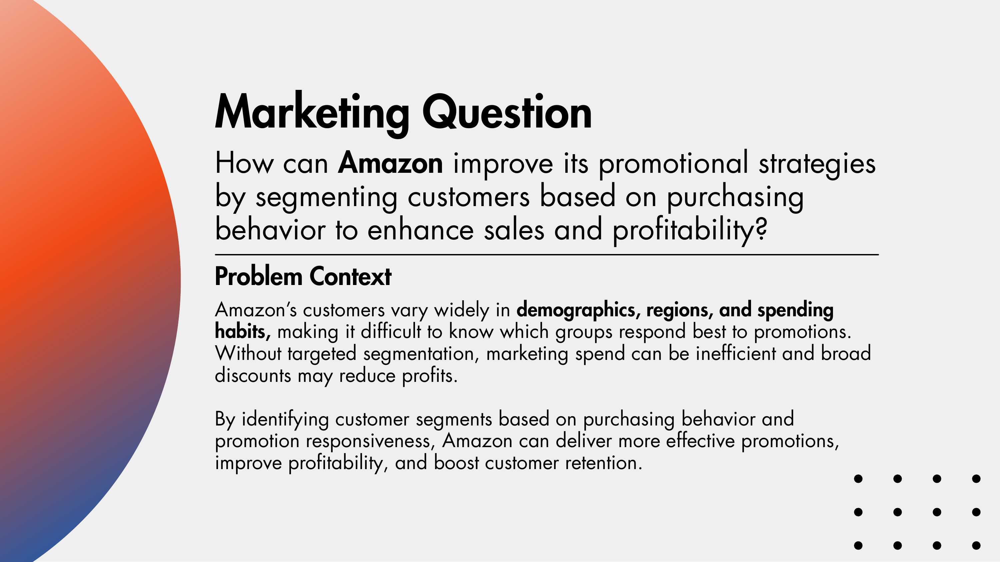
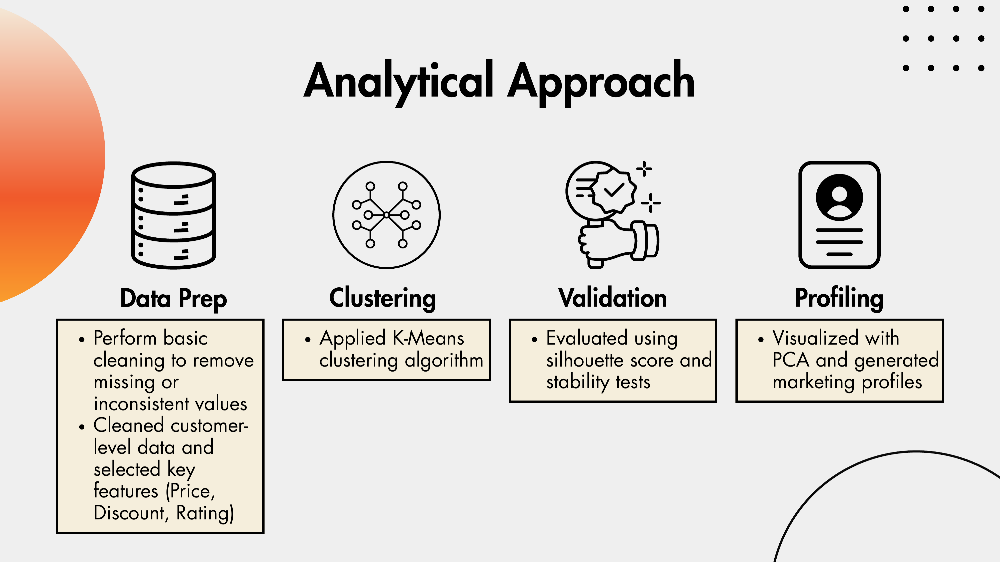
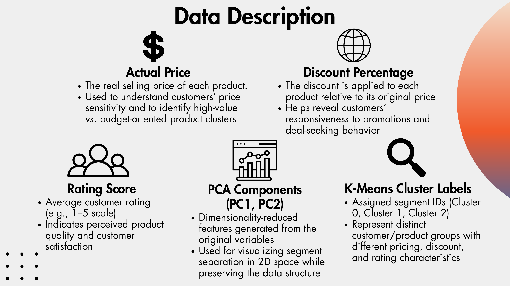
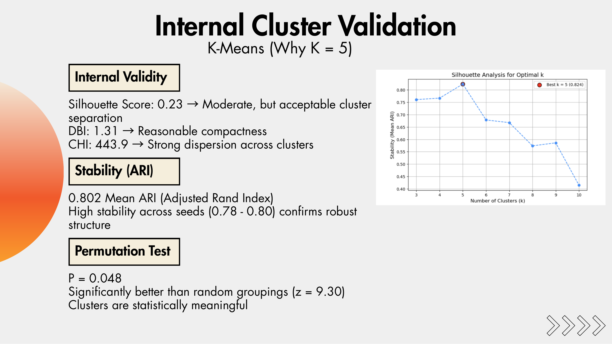
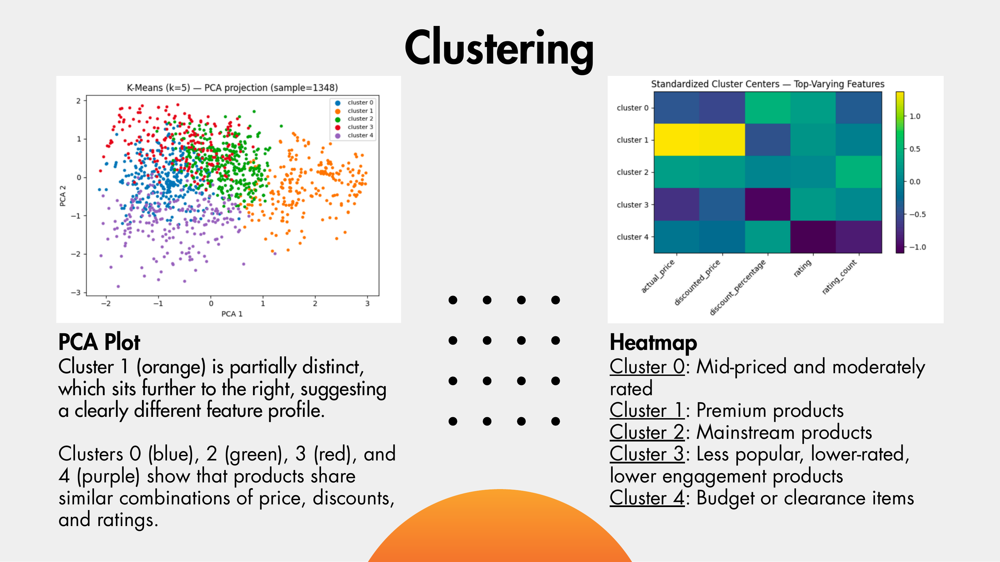
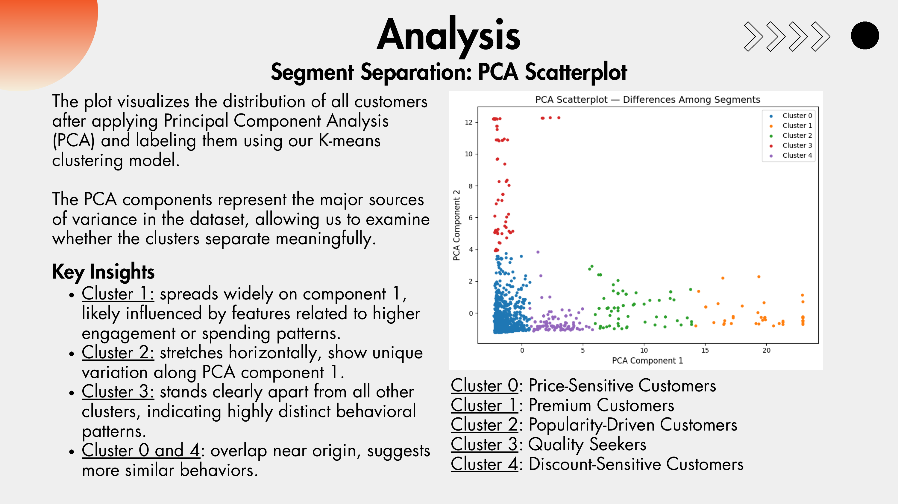
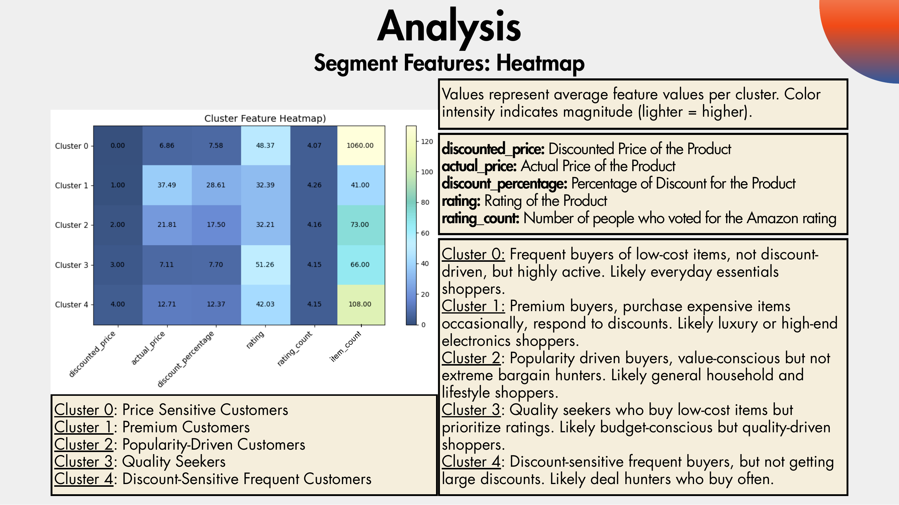
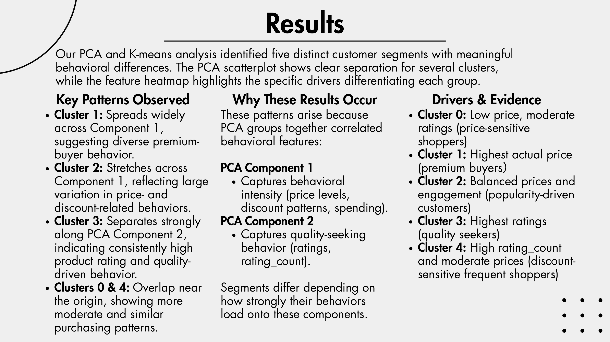
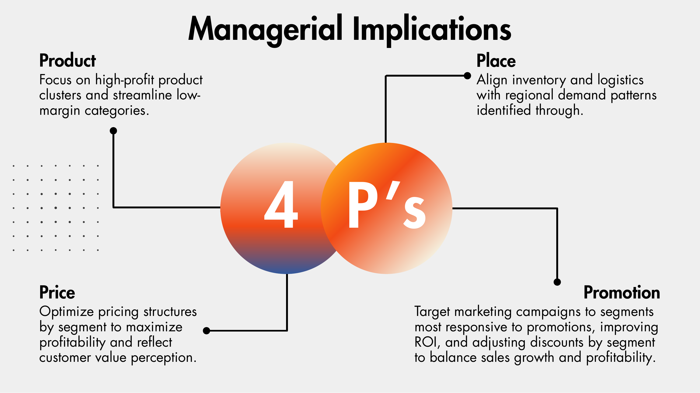
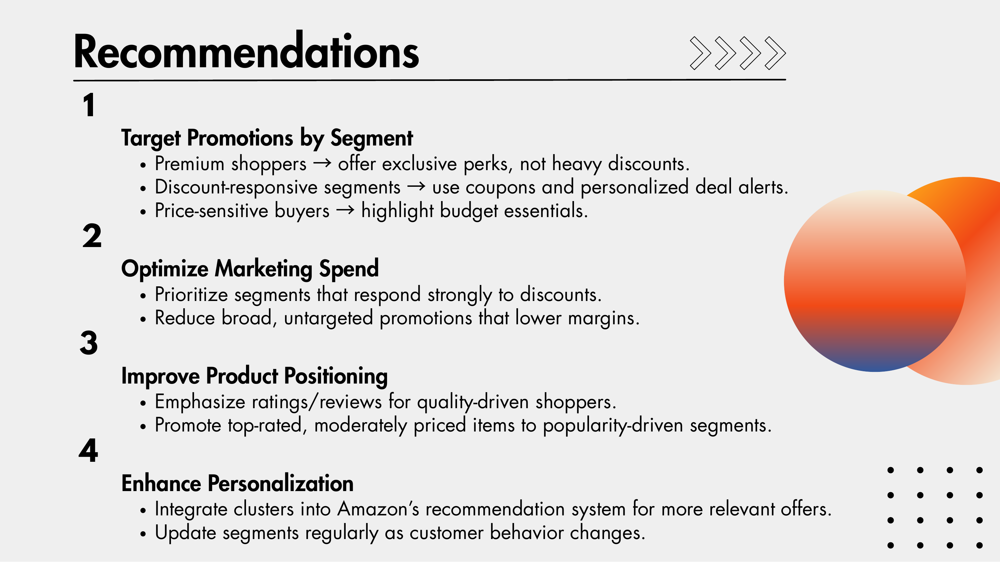
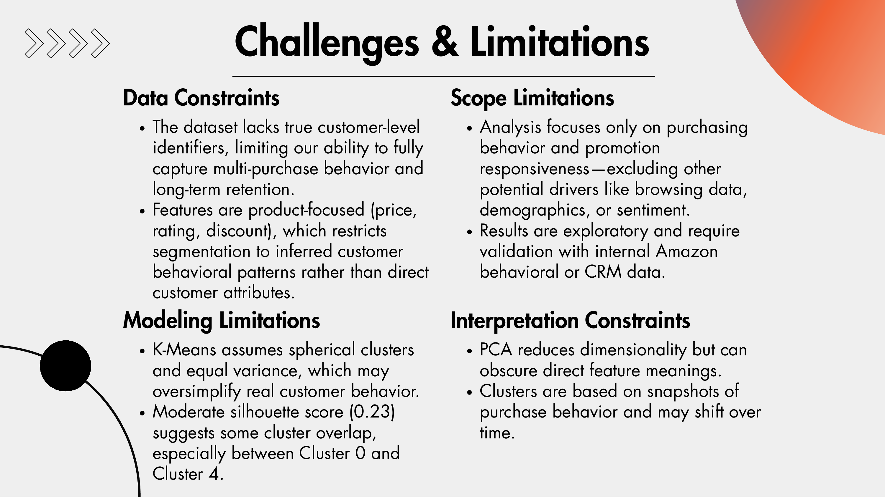
What I learned
K-Means surfaced five clear customer personas: price-sensitive, premium, popularity-driven, quality seekers, and discount-sensitive frequent buyers. Crucially, the segments held up under scrutiny: a mean ARI of 0.80 across seeds and a significant permutation test (p=0.048) showed the structure was real, not an artifact of the algorithm.
The personas translate directly into strategy: offer premium buyers exclusive perks rather than discounts, reach deal-seekers with coupons, and highlight budget essentials for price-sensitive shoppers. The main caveat is that the dataset is product-focused and lacks true customer identifiers, so the segments are inferred behavioral patterns that should be validated against Amazon's internal CRM data before a full rollout.